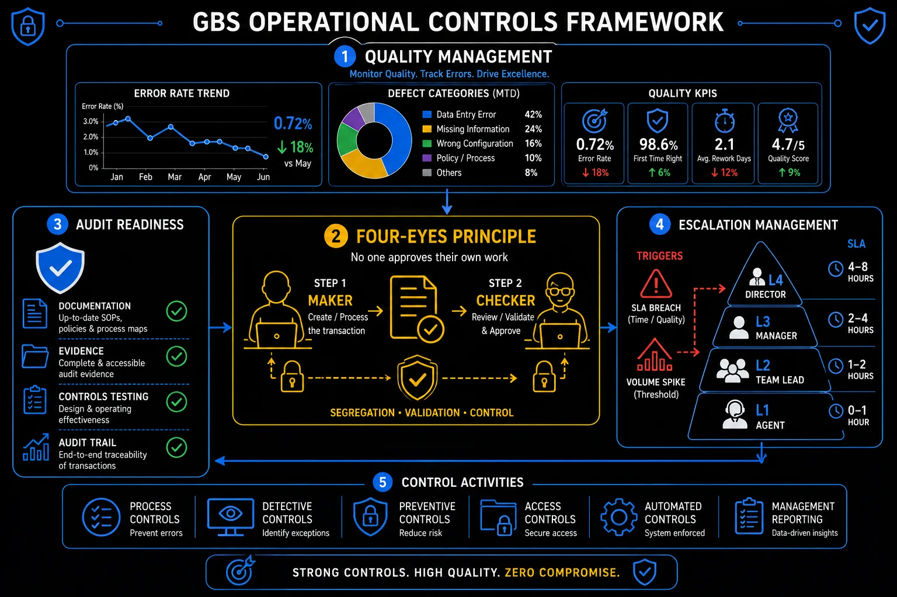

Operational Controls The guardrails that keep GBS honest — and audit-proof.
Controls are not bureaucracy. They are the evidence that your organization can be trusted to handle money, data, and decisions correctly — consistently and without supervision. Understanding them early in your career changes how you read every process you work in.
The four-eyes principleA control requiring that a second, independent person reviews and approves any significant action before it is executed. The most widely applied internal control in GBS finance processes. — why two people are better than one
The four-eyes principle is the simplest and most universal internal control in GBS. One person acts. A second person, independent of the first, reviews and approves. Neither can complete the transaction alone.
Performs the action
Creates the payment, posts the entry, sets up the vendor, enters the data. Has full access to prepare but cannot approve their own work.
Independent review
A second person — with no role in the preparation — checks the work against policy, supporting documentation, and approval thresholds. Not a rubber stamp: active scrutiny required.
Approved or rejected
If the reviewer is satisfied: approved, with their ID logged in the system. If not: returned with a reason. Both actions are traceable.
- Payment runs: processor releases invoices for payment → team lead or treasury approves the payment run
- Vendor setup: new vendor created in the ERP → independent review confirms bank details, VAT number, and duplicate check before activation
- Journal entries above threshold: journal posted by analyst → reviewed and approved by senior accountant or controller
- Master data changes: change to payment terms, bank account, or address requires a second sign-off to prevent fraud
- Credit note issuance: credit notes above a defined threshold require approval before release to avoid unauthorized revenue reversal
The most common failure mode for the four-eyes principle is not bypassing it — it is performing it without actually reviewing.
- A reviewer who approves based on trust rather than scrutiny provides no protection.
- Auditors test this by checking whether reviewers can explain what they approved and why.
- A culture where second reviews are rushed or treated as a formality is a culture where controls exist on paper but not in practice.
Four-eyes principle — maker-checker control

GBS operational controls framework: quality management, four-eyes principle, audit readiness, and escalation tiers
Segregation of dutiesSoD — the principle that no single person should have end-to-end control over a critical financial process. Separating create, approve, and release roles prevents fraud and reduces error risk. — the architecture behind the four-eyes principle
If the four-eyes principle is the rule, Segregation of Duties (SoD) is the system design that makes it possible. SoD means that no single person controls a complete financial cycle from start to finish.
- Why it exists: if one person can create a vendor, approve an invoice, and release the payment, there is no check. Fraudulent payments become easy. Errors go undetected for months.
- SOX requirement: for publicly listed companies, Section 404 of SOX requires documented evidence that SoD is designed correctly and operating effectively — tested annually by internal and external auditors
- The most common GBS SoD failure: insufficient headcount. When a small team covers too many roles, individuals end up with conflicting access rights — not by design, but by necessity. Auditors find these and flag them as control deficiencies.
- Compensating controls: when true SoD is not possible (too small a team), a compensating control is required — typically a management review of all transactions performed by the conflicted individual
- System enforcement: ERP access rights (SAP authorization profiles, Oracle role configuration) should enforce SoD at the system level — not rely on policy alone
Audit readiness — being "audit ready" every day, not just when auditors arrive
The goal is not to pass audits. The goal is to operate in a way that makes passing audits a byproduct of how you normally work — not a sprint you do once a year.
- Control documentation: every key control documented — what it is, who performs it, when, and what evidence it produces
- Evidence of execution: system logs, approval records, review sign-offs — timestamped, traceable, and attached to the transaction or reconciliation they relate to
- SoD compliance: access rights matrix showing who can do what, with no unmitigated conflicts
- Current SOPs: process documentation that reflects how the process actually runs today — version-controlled and recently approved
- Training records: evidence that staff have been trained on current controls — especially after any process or system change
- Exception handling: documented process for what happens when a control fails or an exception occurs — and evidence that exceptions were handled correctly
- Management review evidence: regular review of key reports, reconciliations, and metrics — signed off and dated
- Attach evidence at the time of execution — not six months later when auditors ask.
- Maintain version-controlled documentation that reflects how the process actually runs today.
- Flag exceptions immediately rather than hoping nobody notices.
Quality management — building audit readiness into daily work
Handling escalations, volume spikes, and SLA breaches
In GBS, things go wrong. Systems fail, volumes spike unexpectedly, team members are absent at exactly the wrong time. How you respond to these events defines your operational maturity, and your professional reputation.
- Declare it early: the moment volume is tracking 20%+ above plan, flag it. Do not wait for the backlog to form. Early warning is the single most valuable action.
- Triage the backlog: not all items are equal. Aged items near payment deadlines, items with stakeholder escalations, and regulatory filings have priority over standard aging. Sort and prioritize explicitly.
- Reallocate capacity temporarily: cross-trained team members from adjacent processes can provide surge support for standardized tasks. This is one reason cross-training is a governance requirement, not optional.
- Communicate proactively: stakeholders who find out about a backlog before GBS tells them lose trust permanently. Stakeholders who are told early, with a plan, usually remain constructive.
- Close the loop: after recovery, document what happened, what caused it, and what prevents recurrence. Volume spikes that are not analyzed become recurring surprises.
- Controls are your professional protection, not just the organization's. When something goes wrong in GBS — a payment is made incorrectly, data is lost, a fraud occurs — the question is: was the control in place and was it followed? If yes, you are protected. If not, you are exposed. Following controls carefully, every time, is not compliance theater — it is career risk management.
- The worst escalations are the ones that surprise leadership. An SLA breach that GBS discovered, reported, and had a plan for is manageable. An SLA breach that a business stakeholder raised before GBS leadership knew about it is a trust crisis. The discipline of flagging early — even when you are not certain — is a mark of operational maturity.
- Being audit-ready every day is easier than you think — and harder than most teams manage. The daily habits that create audit readiness (attaching evidence at execution time, version-controlling documents, logging exceptions immediately) take about 5 minutes per transaction. The catch-up sprint to recreate evidence from six months ago takes weeks — and sometimes cannot be done at all.
Escalation framework — structured issue resolution
Key terms in this cluster
Full glossary at the GBS Insider Club Field Guide.
- Exabeam — SOX Controls: Common Types, Examples & Implementation Practices
- SecureEnds — Segregation of Duties in Internal Controls: Framework and Best Practices
- Ramp — Segregation of Duties in Accounts Payable Explained
- Zampa Partners — The Four Eyes Principle in Sanctions Monitoring: An Internal Audit Perspective
- SafePaaS — Why Segregation of Duties is Critical for SOX Controls
- Pathlock — Internal Controls for SOX Compliance: A Practical Guide
- ACFE — Association of Certified Fraud Examiners, 2024 Report to the Nations: SoD fraud detection statistics
- ✓ Four-eyes principle — the most universal GBS control, with examples
- ✓ Segregation of Duties — design principles, SOX requirements, ERP enforcement
- ✓ Audit readiness — daily habits that make audit prep a formality
- ✓ Escalation matrix — L1/L2/L3 escalation triggers and response frameworks
- → Personal Productivity — Eisenhower Matrix, time blocking, inbox zero — Cluster 5
Want the full breakdown on video?
GBS operational controls covered in depth on the GBS Insider Club YouTube channel.
▶ Subscribe on YouTubeKnowing the frameworks is the entry ticket. Applying them — visibly, at your actual job — is what gets you promoted.
The GBS Insider Club Career Paths turn this theory into a guided 90-day program for your role: self-assessment, practical exercises, templates, and Julian's unfiltered practitioner playbook.
Explore the Career Paths → Back to Operational Excellence